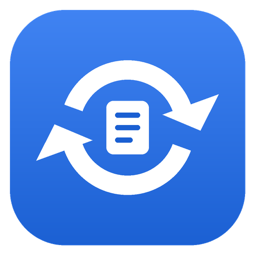

DriveSync
DriveSync is a small personal desktop app for Windows and Linux that keeps chosen files in sync between your own computers through your own Google Drive.
How it works
- You pick individual files on each computer. DriveSync keeps a copy in a folder called “DriveSync” in your Google Drive.
- When a file changes on one computer, the others download the new version automatically.
- If a file was changed on two computers at once, both versions are kept.
- DriveSync uses Google's
drive.filepermission, so it can only see files it created itself, nothing else in your Drive.
Privacy
DriveSync runs entirely on your computer and talks only to Google. See the privacy policy.